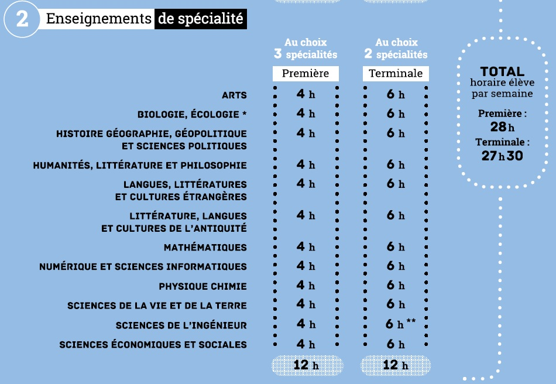

Présentation de mon orientation .
SOMMAIRE
- Quel métier j'envisage de faire ??
- Mes études après le bac ??
- Quels spécialités prendre pour la premiere ??
Quel métier j'envisage de faire ??

Kinésithérapeute sportif:
Le métier que j'envisage de faire se trouve dans le domaine de la médecine :"Kinésithérapeute sportif". Les kinésithérapeute sportif sont des spécialistes de la rééducation fonctionnelle du corps.Il a pour mission de soigner et prévenir les blessures articulaires ou musculaires.Un kiné sportif peut gagner en moyenne 3 284 euro net par mois , mais dans le secteur privé
Mes études après le bac ??
Pour mes études après le bac , il faudrait que je m'oriente vers une licence STAPS ou biologie.Pour commencer il faut valider sa 1er année de licences pour soit :
- 1-Continuer en 1er année de kinésithérapeute
- 2-Poursuivre en 2éme année de STAPS
Si je ne valide pas la 1er année de licence , je ne pourrais pas être candidater en Kinésithérapeute et donc soit :
Les études de kinésithérapeute peuvent durer 3ans comme 5ans . Avec une première année en université et 4 année de préparation
Quels spécialités prendre pour la premier ??
Les spécialités à choisir pour la premiére est d'aller en génerale avec mathématiques , SVT et physique chimie .
mais si vous voulez vous pouver choisir entre :
- *EPS
- *PHYSIQUE CHIMIE